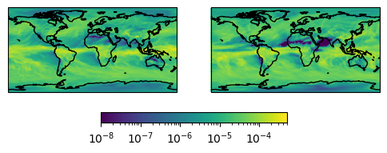
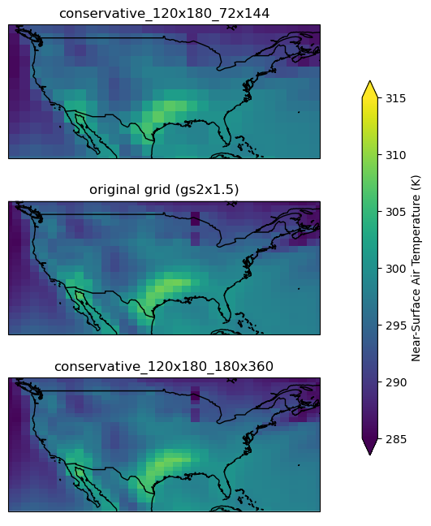

DRAFT
This is a work in progress :)
from intake_esgf import ESGFCatalog
import matplotlib.pyplot as plt
Get one model
cat.search(
experiment_id="historical",
source_id="CESM2",
frequency="mon",
variable_id="pr",
member_id="r1i1p1f1",
)
print(cat)
Summary information for 1 results:
grid_label [gn]
source_id [CESM2]
mip_era [CMIP6]
member_id [r1i1p1f1]
variable_id [pr]
datetime_stop [2014-12-15T12:00:00Z]
table_id [Amon]
activity_drs [CMIP]
experiment_id [historical]
datetime_start [1850-01-15T12:00:00Z]
institution_id [NCAR]
project [CMIP6]
dtype: object
dsd = cat.to_dataset_dict()
Get another
cat.search(
experiment_id="historical",
source_id="E3SM-1-0",
frequency="mon",
variable_id="pr",
member_id="r6i2p2f1",
)
print(cat)
Summary information for 1 results:
grid_label [gr]
source_id [E3SM-1-0]
mip_era [CMIP6]
member_id [r6i2p2f1]
variable_id [pr]
table_id [Amon]
activity_drs [CMIP]
experiment_id [historical]
datetime_start [1850-01-16T00:00:00Z]
institution_id [UCSB]
project [CMIP6]
dtype: object
dsd2 = cat.to_dataset_dict()
Two models are on different grids
# first gets the dataset, second gets the variable/data array
# will be different if you have multiple variables... TODO!
pr1 = dsd["pr"]["pr"]
pr2 = dsd2["pr"]["pr"]
pr1.lat
<xarray.DataArray 'lat' (lat: 192)> Size: 2kB
array([-90. , -89.057592, -88.115183, -87.172775, -86.230366, -85.287958,
-84.34555 , -83.403141, -82.460733, -81.518325, -80.575916, -79.633508,
-78.691099, -77.748691, -76.806283, -75.863874, -74.921466, -73.979058,
-73.036649, -72.094241, -71.151832, -70.209424, -69.267016, -68.324607,
-67.382199, -66.439791, -65.497382, -64.554974, -63.612565, -62.670157,
-61.727749, -60.78534 , -59.842932, -58.900524, -57.958115, -57.015707,
-56.073298, -55.13089 , -54.188482, -53.246073, -52.303665, -51.361257,
-50.418848, -49.47644 , -48.534031, -47.591623, -46.649215, -45.706806,
-44.764398, -43.82199 , -42.879581, -41.937173, -40.994764, -40.052356,
-39.109948, -38.167539, -37.225131, -36.282723, -35.340314, -34.397906,
-33.455497, -32.513089, -31.570681, -30.628272, -29.685864, -28.743455,
-27.801047, -26.858639, -25.91623 , -24.973822, -24.031414, -23.089005,
-22.146597, -21.204188, -20.26178 , -19.319372, -18.376963, -17.434555,
-16.492147, -15.549738, -14.60733 , -13.664921, -12.722513, -11.780105,
-10.837696, -9.895288, -8.95288 , -8.010471, -7.068063, -6.125654,
-5.183246, -4.240838, -3.298429, -2.356021, -1.413613, -0.471204,
0.471204, 1.413613, 2.356021, 3.298429, 4.240838, 5.183246,
6.125654, 7.068063, 8.010471, 8.95288 , 9.895288, 10.837696,
11.780105, 12.722513, 13.664921, 14.60733 , 15.549738, 16.492147,
17.434555, 18.376963, 19.319372, 20.26178 , 21.204188, 22.146597,
23.089005, 24.031414, 24.973822, 25.91623 , 26.858639, 27.801047,
28.743455, 29.685864, 30.628272, 31.570681, 32.513089, 33.455497,
34.397906, 35.340314, 36.282723, 37.225131, 38.167539, 39.109948,
40.052356, 40.994764, 41.937173, 42.879581, 43.82199 , 44.764398,
45.706806, 46.649215, 47.591623, 48.534031, 49.47644 , 50.418848,
51.361257, 52.303665, 53.246073, 54.188482, 55.13089 , 56.073298,
57.015707, 57.958115, 58.900524, 59.842932, 60.78534 , 61.727749,
62.670157, 63.612565, 64.554974, 65.497382, 66.439791, 67.382199,
68.324607, 69.267016, 70.209424, 71.151832, 72.094241, 73.036649,
73.979058, 74.921466, 75.863874, 76.806283, 77.748691, 78.691099,
79.633508, 80.575916, 81.518325, 82.460733, 83.403141, 84.34555 ,
85.287958, 86.230366, 87.172775, 88.115183, 89.057592, 90. ])
Coordinates:
* lat (lat) float64 2kB -90.0 -89.06 -88.12 -87.17 ... 88.12 89.06 90.0
Attributes:
axis: Y
bounds: lat_bnds
standard_name: latitude
title: Latitude
type: double
units: degrees_north
valid_max: 90.0
valid_min: -90.0pr2.lat
<xarray.DataArray 'lat' (lat: 180)> Size: 1kB
array([-89.5, -88.5, -87.5, -86.5, -85.5, -84.5, -83.5, -82.5, -81.5, -80.5,
-79.5, -78.5, -77.5, -76.5, -75.5, -74.5, -73.5, -72.5, -71.5, -70.5,
-69.5, -68.5, -67.5, -66.5, -65.5, -64.5, -63.5, -62.5, -61.5, -60.5,
-59.5, -58.5, -57.5, -56.5, -55.5, -54.5, -53.5, -52.5, -51.5, -50.5,
-49.5, -48.5, -47.5, -46.5, -45.5, -44.5, -43.5, -42.5, -41.5, -40.5,
-39.5, -38.5, -37.5, -36.5, -35.5, -34.5, -33.5, -32.5, -31.5, -30.5,
-29.5, -28.5, -27.5, -26.5, -25.5, -24.5, -23.5, -22.5, -21.5, -20.5,
-19.5, -18.5, -17.5, -16.5, -15.5, -14.5, -13.5, -12.5, -11.5, -10.5,
-9.5, -8.5, -7.5, -6.5, -5.5, -4.5, -3.5, -2.5, -1.5, -0.5,
0.5, 1.5, 2.5, 3.5, 4.5, 5.5, 6.5, 7.5, 8.5, 9.5,
10.5, 11.5, 12.5, 13.5, 14.5, 15.5, 16.5, 17.5, 18.5, 19.5,
20.5, 21.5, 22.5, 23.5, 24.5, 25.5, 26.5, 27.5, 28.5, 29.5,
30.5, 31.5, 32.5, 33.5, 34.5, 35.5, 36.5, 37.5, 38.5, 39.5,
40.5, 41.5, 42.5, 43.5, 44.5, 45.5, 46.5, 47.5, 48.5, 49.5,
50.5, 51.5, 52.5, 53.5, 54.5, 55.5, 56.5, 57.5, 58.5, 59.5,
60.5, 61.5, 62.5, 63.5, 64.5, 65.5, 66.5, 67.5, 68.5, 69.5,
70.5, 71.5, 72.5, 73.5, 74.5, 75.5, 76.5, 77.5, 78.5, 79.5,
80.5, 81.5, 82.5, 83.5, 84.5, 85.5, 86.5, 87.5, 88.5, 89.5])
Coordinates:
* lat (lat) float64 1kB -89.5 -88.5 -87.5 -86.5 ... 86.5 87.5 88.5 89.5
Attributes:
bounds: lat_bnds
units: degrees_north
axis: Y
long_name: Latitude
standard_name: latitudeStarting plot - no regridding
# import xarray as xr
# import numpy as np
import matplotlib.pyplot as plt
import matplotlib.patches as mpatches
import matplotlib.colors as mcolors
import cartopy.crs as ccrs
import cartopy.feature as cfeature
from matplotlib.gridspec import GridSpec
from mpl_toolkits.axes_grid1.inset_locator import inset_axes
# also harcoded...
figsize = (6, 2)
# Harcoded colorbar limits - make better!
vmin=1e-8
vmax=5e-4
# pick some time step just so you have 2D data
# TODO - average!
pr1t = pr1.isel(time=3)
pr2t = pr2.isel(time=3)
TODO - Mollweide or Robinson?
need to troubleshoot that
# set up figure
fig = plt.figure(figsize=figsize)
gs = GridSpec(2, 2, height_ratios=[1, 0.1], hspace=0.2)#, wspace=0.5)
# specify the projection
proj = ccrs.PlateCarree()
# set up plots for each model
ax1 = plt.subplot(gs[0, 0], projection=proj)
ax2 = plt.subplot(gs[0, 1], projection=proj)
ax1.set_global()
ax2.set_global()
# axis where the colorbar will go
ax_cb = plt.subplot(gs[1, :])
ax_cb.axis("off")
# plot on the axes
pcm1 = ax1.pcolormesh(pr1t.lon, pr1t.lat, pr1t, norm=mcolors.LogNorm(vmin=vmin, vmax=vmax),
transform=proj)
pcm2 = ax2.pcolormesh(pr2t.lon, pr2t.lat, pr2t, norm=mcolors.LogNorm(vmin=vmin, vmax=vmax),
transform=proj)
# add coastlines
ax1.add_feature(cfeature.COASTLINE)
ax2.add_feature(cfeature.COASTLINE)
# since the colormap/scale is the same, we can use either pcolormesh to
# set the colorbar
ax_cb_ins = inset_axes(ax_cb, width="50%", height="100%", loc="center")
cbar = plt.colorbar(pcm1, cax=ax_cb_ins, orientation="horizontal")
plt.show()

Try to find the difference in precip between the models
pr_diff = pr1t - pr2t
No y dimension because the grids have different latitudes!
pr_diff
<xarray.DataArray 'pr' (lat: 0, lon: 72)> Size: 0B dask.array<subtract, shape=(0, 72), dtype=float32, chunksize=(0, 72), chunktype=numpy.ndarray> Coordinates: * lat (lat) float64 0B * lon (lon) float64 576B 2.5 7.5 12.5 17.5 ... 342.5 347.5 352.5 357.5
Try regridding
See docs here: https://github.com/roocs/rooki/blob/master/notebooks/demo/demo-rooki-regrid-cmip6.ipynb
import os
os.environ['ROOK_URL'] = 'http://rook.dkrz.de/wps'
from rooki import rooki
from rooki import operators as ops
View available grid types/regrid methods:
rooki.regrid?
Signature: rooki.regrid(collection, method='nearest_s2d', grid='auto')
Docstring:
Run regridding operator on climate model data using daops (xarray).
Parameters
----------
collection : string
A dataset identifier or list of comma separated identifiers. Example: c3s-cmip5.output1.ICHEC.EC-EARTH.historical.day.atmos.day.r1i1p1.tas.latest
method : {'nearest_s2d', 'bilinear', 'conservative', 'patch'}string
Please specify regridding method like consevative or bilinear. Default: nearest_s2d
grid : {'auto', '0pt25deg', '0pt25deg_era5', '0pt5deg_lsm', '0pt625x0pt5deg', '0pt75deg', '1deg', '1pt25deg', '2pt5deg'}string
Please specify output grid resolution for regridding. Default: auto
Returns
-------
output : ComplexData:mimetype:`application/metalink+xml; version=4.0`
Metalink v4 document with references to NetCDF files.
prov : ComplexData:mimetype:`application/json`
Provenance document using W3C standard.
prov_plot : ComplexData:mimetype:`image/png`
Provenance document as diagram.
File: ~/esgf-cookbook/notebooks/</srv/conda/envs/notebook/lib/python3.10/site-packages/birdy/client/base.py-8>
Type: method
Compare 1 degree to 2.5 degrees
TODO - extract/search for what the input name should be?
Use conservative method here (not nearest neighbors) bc changing the resolution
tas = ops.Input(
'tas', ['c3s-cmip6.ScenarioMIP.INM.INM-CM5-0.ssp245.r1i1p1f1.day.tas.gr1.v20190619']
)
# NO regrid
wf = ops.Subset(tas, time="2016/2016")
resp = wf.orchestrate()
resp.ok
ds_g = resp.datasets()[0]
ds_g
Downloading to /tmp/metalink_uajgyg7n/tas_day_INM-CM5-0_ssp245_r1i1p1f1_gr1_20160101-20161231.nc.
<xarray.Dataset> Size: 32MB
Dimensions: (time: 365, bnds: 2, lat: 120, lon: 180)
Coordinates:
* time (time) object 3kB 2016-01-01 12:00:00 ... 2016-12-31 12:00:00
* lat (lat) float64 960B -89.25 -87.75 -86.25 ... 86.25 87.75 89.25
* lon (lon) float64 1kB 0.0 2.0 4.0 6.0 8.0 ... 352.0 354.0 356.0 358.0
height float64 8B ...
Dimensions without coordinates: bnds
Data variables:
time_bnds (time, bnds) object 6kB ...
lat_bnds (lat, bnds) float64 2kB ...
lon_bnds (lon, bnds) float64 3kB ...
tas (time, lat, lon) float32 32MB ...
Attributes: (12/47)
Conventions: CF-1.7 CMIP-6.2
activity_id: ScenarioMIP
branch_method: standard
branch_time_in_child: 60225.0
branch_time_in_parent: 60225.0
contact: Evgeny Volodin (volodinev@gmail.com)
... ...
title: INM-CM5-0 output prepared for CMIP6
tracking_id: hdl:21.14100/89cab4a2-c867-4bb5-a215-622f969cd844
variable_id: tas
variant_label: r1i1p1f1
license: CMIP6 model data produced by Lawrence Livermore P...
cmor_version: 3.4.0# 2.5 degrees
wf2 = ops.Subset(tas, time="2016/2016")
wf2 = ops.Regrid(wf2, method="conservative", grid="2pt5deg")
resp2 = wf2.orchestrate()
resp2.ok
ds_25 = resp2.datasets()[0]
ds_25
Downloading to /tmp/metalink_mxgvwncd/tas_day_INM-CM5-0_ssp245_r1i1p1f1_gr_20160101-20161231_regrid-conservative-72x144_cells_grid.nc.
<xarray.Dataset> Size: 15MB
Dimensions: (lat: 72, lon: 144, bnds: 2, time: 365)
Coordinates:
* lat (lat) float64 576B -88.75 -86.25 -83.75 ... 83.75 86.25 88.75
* lon (lon) float64 1kB 1.25 3.75 6.25 8.75 ... 351.2 353.8 356.2 358.8
lat_bnds (lat, bnds) float64 1kB ...
lon_bnds (lon, bnds) float64 2kB ...
* time (time) object 3kB 2016-01-01 12:00:00 ... 2016-12-31 12:00:00
height float64 8B ...
time_bnds (time, bnds) object 6kB ...
Dimensions without coordinates: bnds
Data variables:
tas (time, lat, lon) float32 15MB ...
Attributes: (12/52)
Conventions: CF-1.7 CMIP-6.2
activity_id: ScenarioMIP
branch_method: standard
branch_time_in_child: 60225.0
branch_time_in_parent: 60225.0
contact: Evgeny Volodin (volodinev@gmail.com)
... ...
grid_original: gs2x1.5
grid_label_original: gr1
nominal_resolution_original: 100 km
regrid_operation: conservative_120x180_72x144
regrid_tool: xESMF_v0.8.2
regrid_weights_uid: 046d352045d899caf55bd49408cff1e6_d4ebf55323...# 1 degree
wf1 = ops.Subset(tas, time="2016/2016")
wf1 = ops.Regrid(wf1, method="conservative", grid="1deg")
resp1 = wf1.orchestrate()
resp1.ok
ds_1 = resp1.datasets()[0]
ds_1
Downloading to /tmp/metalink_x89nq9a4/tas_day_INM-CM5-0_ssp245_r1i1p1f1_gr_20160101-20161231_regrid-conservative-180x360_cells_grid.nc.
<xarray.Dataset> Size: 95MB
Dimensions: (lat: 180, lon: 360, bnds: 2, time: 365)
Coordinates:
* lat (lat) float64 1kB -89.5 -88.5 -87.5 -86.5 ... 86.5 87.5 88.5 89.5
* lon (lon) float64 3kB 0.5 1.5 2.5 3.5 4.5 ... 356.5 357.5 358.5 359.5
lat_bnds (lat, bnds) float64 3kB ...
lon_bnds (lon, bnds) float64 6kB ...
* time (time) object 3kB 2016-01-01 12:00:00 ... 2016-12-31 12:00:00
height float64 8B ...
time_bnds (time, bnds) object 6kB ...
Dimensions without coordinates: bnds
Data variables:
tas (time, lat, lon) float32 95MB ...
Attributes: (12/52)
Conventions: CF-1.7 CMIP-6.2
activity_id: ScenarioMIP
branch_method: standard
branch_time_in_child: 60225.0
branch_time_in_parent: 60225.0
contact: Evgeny Volodin (volodinev@gmail.com)
... ...
grid_original: gs2x1.5
grid_label_original: gr1
nominal_resolution_original: 100 km
regrid_operation: conservative_120x180_180x360
regrid_tool: xESMF_v0.8.2
regrid_weights_uid: 046d352045d899caf55bd49408cff1e6_d24f4f689f...Plot 2.5deg vs. default vs. 1deg
import matplotlib.pyplot as plt
import matplotlib.colors as mcolors
import cartopy.crs as ccrs
import cartopy.feature as cfeature
from matplotlib.gridspec import GridSpec
from mpl_toolkits.axes_grid1.inset_locator import inset_axes
# plot together
fig = plt.figure(figsize=(6, 8))
gs = GridSpec(3, 2, width_ratios=[1, 0.1], height_ratios=[1, 1, 1], hspace=0.2, wspace=0.2)
# specify the projection
proj = ccrs.PlateCarree()
# set up plot axes
ax1 = plt.subplot(gs[0, 0], projection=proj)
ax2 = plt.subplot(gs[1, 0], projection=proj)
ax3 = plt.subplot(gs[2, 0], projection=proj)
axes_list = [ax1, ax2, ax3]
# set up colorbar axis
axcb = plt.subplot(gs[:, 1])
# loop through each dataset and its corresponding axis
for i, ds in enumerate([ds_25, ds_g, ds_1]):
plot_ds = ds["tas"].isel(time=180)
ax = axes_list[i]
pcm = ax.pcolormesh(plot_ds.lon, plot_ds.lat, plot_ds, vmin=285, vmax=315, transform=proj)
ax.add_feature(cfeature.BORDERS)
ax.coastlines()
# focus on CONUS for this example
ax.set_xlim(-130, -60)
ax.set_ylim(22, 52)
# label with the regrid type; if it fails, that means it hasn't been regridded
# (so label with "original grid")
try:
ax.set_title(ds.regrid_operation)
except:
ax.set_title("original grid ({g})".format(g=ds.grid))
# set the colorbar
axcb.axis("off")
axcb_ins = inset_axes(axcb, width="50%", height="75%", loc="center")
cbar = plt.colorbar(pcm, cax=axcb_ins, orientation="vertical", extend="both")
cbar.set_label("{n} ({u})".format(n=plot_ds.long_name, u=plot_ds.units))
plt.show()
